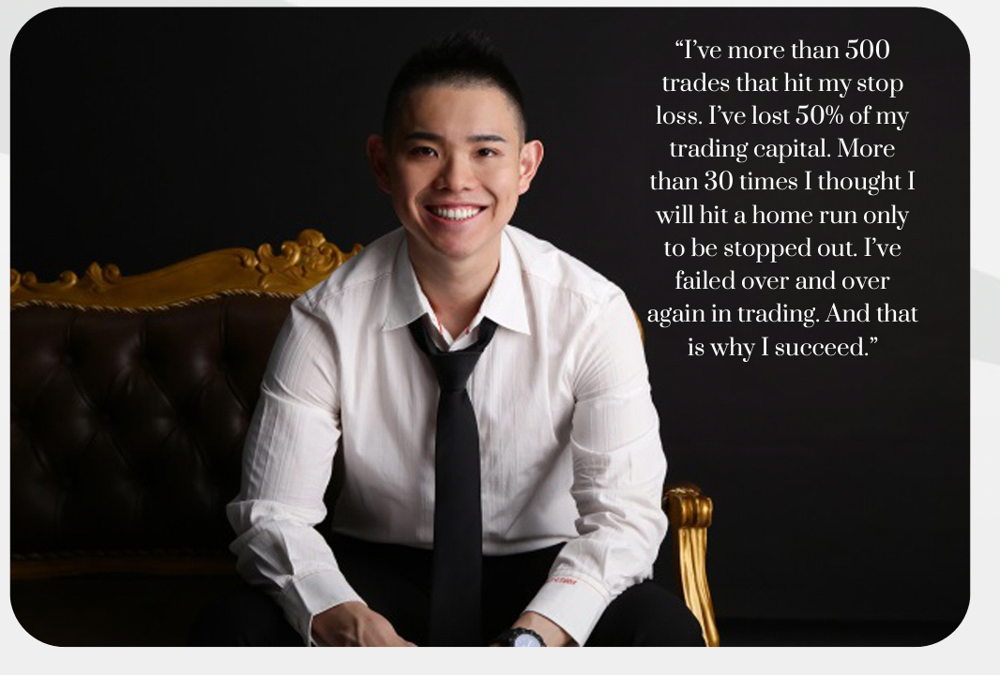

Be Inspired.
Our world is filled with people of influence, although this spans across both positive and negative impactful individuals, the daring steps of these heroes can not be simply overlooked.
There has been a wide range of deliberations to decide if men are born influential or they just grow into it, "Nuture or Nature?" as many will refer to it; this has become one of the most discussed and controversial topic amidst philosophers and great men of this world.
Oh! You are already choosing sides!? Do not wander too far, we are going to be presenting to you the most fluential people of the world in 2020.
Enjoy the cruise,cheers!
Most Influential (Top 6).
Based on past activities and most recent participations,the following data are collected on our telegram group. Here is our list of 6 most influential;
- Fele Omolola
- Akerele Tosin
- Tiannah Beth
- Fasasi Sherif
- John Eke
- Maxima
NOTE: ranking is strictly not according to importance. Thanks.